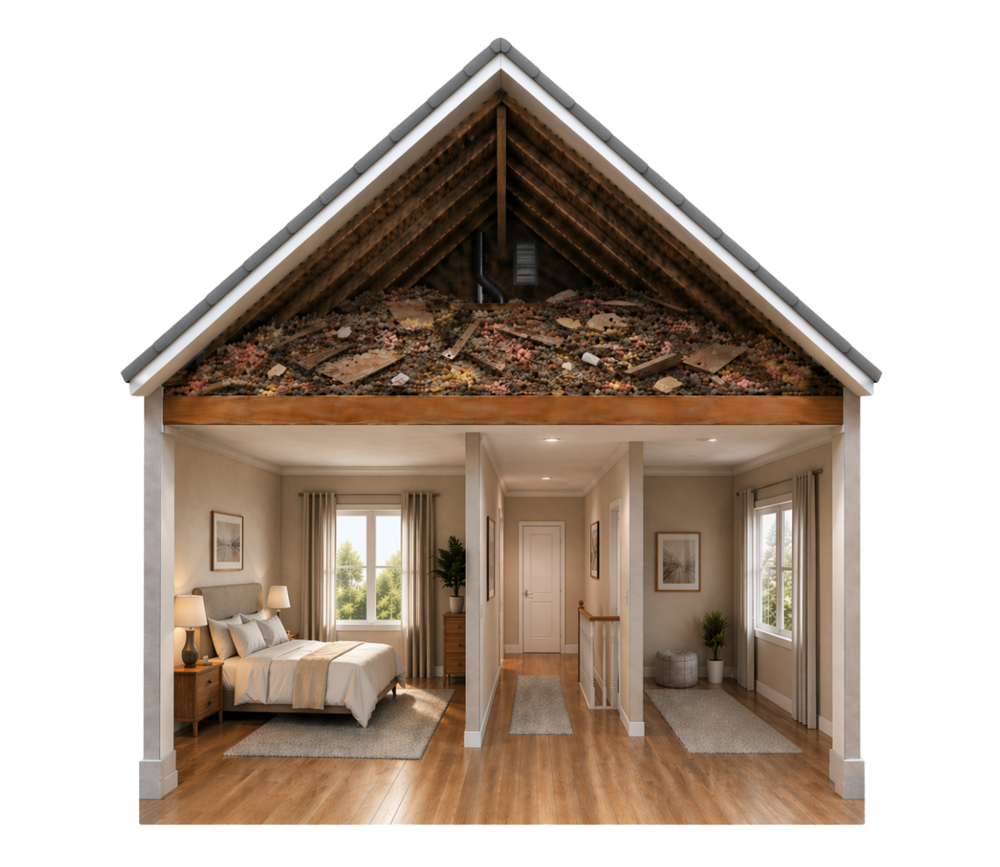
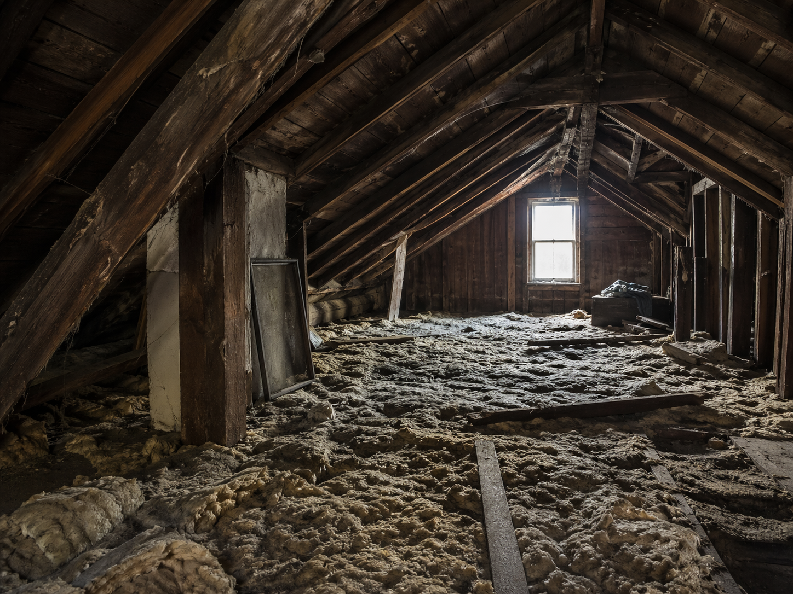

Drafts and uneven temperatures
The attic floor can leak more air than homeowners expect, especially around fixtures, pipes, chases, and framing gaps.
St. Louis • Attic Air Sealing
Good Attic helps St. Louis homeowners reduce attic air leaks that contribute to comfort problems, wasted energy, and stale attic air drift.
What this service solves
The attic floor can leak more air than homeowners expect, especially around fixtures, pipes, chases, and framing gaps.
Open pathways between the house and attic can pull attic contaminants into the conditioned space.
Even decent insulation can struggle if airflow is moving through or around it constantly.
Local attic patterns
The goal is to explain what is actually happening in attics across St. Louis, not just repeat a generic service description.
In St. Louis, leaky attic floors can quietly move conditioned air out of the home and pull dusty attic air toward the living space without homeowners realizing how many small openings are involved.
Many St. Louis homes already have insulation present, but still need the attic boundary tightened where penetrations, top plates, chases, and access points are leaking.
A better sealed attic can support steadier temperatures while also reducing the attic-to-home exchange that makes the house feel dustier or less controlled.
Inspection checkpoints
A stronger recommendation comes from reading the attic correctly first, especially when comfort, contamination, and energy loss are overlapping.
We check around penetrations, chases, attic hatches, and other transitions where the attic boundary often breaks open.
Dirty or contaminated insulation can make it harder to access the attic floor correctly, which is why sealing sometimes belongs after removal or cleanup.
Air sealing and insulation should be coordinated so the attic floor ends up tighter and better protected rather than partially corrected.
If the attic is also under-insulated or dealing with heat-management issues, sealing may be one major piece of a broader attic improvement plan.
Inspection proof
These are the kinds of attic conditions and finish-quality checkpoints the team documents so the recommendation is tied to visible findings instead of generic assumptions.

What we document
Good Attic documents where the attic floor is actually open in St. Louis so the sealing plan is based on real leakage, not assumptions.
Find the leaks first so the scope matches the real attic boundary.
What we document
If the attic floor is buried under compromised material, the documentation should make it clear when cleanup or removal belongs before thorough sealing.
A buried attic floor can change how the sealing work needs to happen.
What changes after the work
The end result should support a cleaner, more complete attic floor instead of leaving the underlying leakage problem untreated.
Sealing should strengthen the attic floor the insulation depends on.Proof path for this service
These proof slots are set up so approved project photos and documented findings can drop into the right page later without redesigning the service architecture.

Ready for project evidence
Add real attic photos that show why the attic needed the work before the project started, especially when the final recommendation was more than a simple top-off.
Waiting on real photos Open target page
Ready for project evidence
This slot is for real documented findings that show what the attic inspection uncovered and why the scope was sequenced the way it was.
Waiting on documented findings Open target page
Ready for project evidence
Use real after photos that show the attic looked cleaner, more intentional, and more complete after the work was finished.
Waiting on after photos Open target pageWhen it fits
Sealing is often one of the cleanest ways to help comfort and efficiency at the same time.
Pipe penetrations, fixture gaps, and open chases can add up quickly.
A sealed attic floor gives the insulation layer a better chance to do its job.
Scope decisions
These are the moments where the attic usually needs a broader plan so the homeowner gets a cleaner, more durable result.
In many St. Louis homes, sealing helps the boundary significantly, but the attic may still need insulation upgrades or a cleaner reset to feel meaningfully finished.
If the attic floor is buried under damaged or contaminated material, the cleaner path may be to reset the attic before trying to tighten it thoroughly.
The strongest results come when the homeowner ends up with sealing, insulation, and access details that all support one another.
What the scope can include
Good Attic is not trying to oversell the project. The point is to sequence the right work so the attic finishes cleaner and performs better.
A real sealing scope starts by finding the leakage points that are actually shaping comfort and energy waste.
When the sealing happens at the right stage, the attic becomes easier to rebuild into a cleaner performance boundary.
Air sealing works best when it is treated as part of the attic plan instead of as a one-off add-on.
Nearby cities
These city pages confirm nearby service coverage while keeping the project connected to the right metro team.
Service area
In Chesterfield, homeowners often call when larger suburban homes have upstairs comfort issues, high seasonal energy bills, or attics that clearly need more than a quick insulation guess. Good Attic helps Chesterfield homeowners solve those attic issues with attic insulation, removal, pest remediation, fans, and air sealing.
View city pageService area
In St. Charles, attic problems often show up across both older homes and newer suburban properties as hot upstairs rooms, dusty insulation, or attics that need a cleaner reset after years of wear. Good Attic helps St. Charles homeowners solve those problems with attic insulation, removal, pest remediation, attic fans, and air sealing.
View city pageService area
In Ballwin, families often notice attic issues through rooms that feel too hot, too cold, or just harder to keep stable than the rest of the house. Good Attic helps Ballwin homeowners solve those attic problems with insulation, removal, pest remediation, attic fans, and air sealing.
View city pageService area
In O'Fallon, homeowners often deal with builder-grade attic performance, summer attic heat, and upstairs rooms that never quite settle into the same comfort as the rest of the house. Good Attic helps O'Fallon homeowners solve those issues with insulation, removal, pest remediation, fans, and air sealing.
View city pageRelated services
These related services often come up in the same attic assessment because comfort, cleanup, airflow, and insulation usually overlap.

St. Louis
Upgrade underperforming attic insulation so the whole home feels steadier, cleaner, and more efficient.
View related service
St. Louis
Remove compromised attic material so the space can be cleaned up, sealed, and rebuilt the right way.
View related service
St. Louis
Support attic airflow with fan solutions that help reduce trapped heat and back up the rest of the attic strategy.
View related serviceApproved review excerpts
Ready for approved excerpt
Add a real approved homeowner excerpt that mentions how clearly the attic findings, scope, and next steps were explained.
Waiting on approved quote Proof page destination
Ready for approved excerpt
This slot is for a real review excerpt that speaks to cleanliness, respectful crews, and how the home was treated during the project.
Waiting on approved quote Proof page destination
Ready for approved excerpt
Use a real approved excerpt that mentions the finished attic, the comfort improvement, or why the homeowner felt better about the house afterward.
Waiting on approved quote Open target pageFAQ
Yes. Insulation and sealing do different jobs, and many comfort complaints involve both.
Common targets include pipe penetrations, wiring openings, top-plate gaps, fixture penetrations, and other bypasses between the house and attic.
It can. Closing attic leakage paths can reduce how easily dusty or stale attic air moves into the living space.
Yes. Insulation and air sealing do different jobs. Many homes in St. Louis have insulation present but still leak enough at the attic floor to lose comfort and efficiency.
We usually see it when the attic has obvious bypasses, dusty air movement, uneven comfort, or insulation that cannot perform well because the boundary underneath it is still open.
Conversion
Use the contact page for a full request or open the quote modal for a quick start. Financing stays linked here because larger attic scopes often need it.
Best next pages
These are the most relevant next pages from here based on the current attic topic, market, or support path.
Best next page
Open St. Louis, MO for the full local market hub, service pages, city support pages, and the right market contact path.
Open page
Best next page
Open Chesterfield, MO for a more local support page that still routes back through the correct market hub and phone path.
Open page
Best next page
Open St. Charles, MO for a more local support page that still routes back through the correct market hub and phone path.
Open page